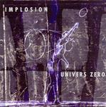

| Artist: | Univers Zero |
| Title: | Implosion |
| Label: | Cuneiform Rune 190 |
| Length(s): | 49 minutes |
| Year(s) of release: | 2004 |
| Month of review: | [01/2005] |
| 1) | Suintement (Oozing) | 1.13 |
| 2) | Falling Rain Dance | 4.12 |
| 3) | Partch's X-ray | 5.21 |
| 4) | Rapt D'Abdallah | 3.01 |
| 5) | Miroirs (Mirrors) | 1.18 |
| 6) | La Mort De Sophocle (Sophocle's Death) | 3.11 |
| 7) | Ectoplasme | 1.07 |
| 8) | Temps Neufs | 4.56 |
| 9) | Mellotronic | 4.04 |
| 10) | Bacteria | 1.28 |
| 11) | Out Of Space 4 | 2.52 |
| 12) | First Short Dance | 0.42 |
| 13) | Second Short Dance | 0.41 |
| 14) | Variations On A Mellotronic's Theme | 3.04 |
| 15) | A Rebours (In Reverse) | 1.56 |
| 16) | Meandres (Meanderings) | 9.38 |
All sound samples from Implosion appear here by permission of Cuneiform Records.
With Rapt D'Abdallah we return to the chamber orchestra music we have come to expect of Univers Zero. In view of the title, it is not strange that the track has Arabic influences, while the marimba gives the music a Zappaesque feel as well. Like on track two, there is a certain lightheartedness about the music, and even something quirky. The song is not just playing, but also includes some good melodies and the playing at first glance seems rather fragmentary, but close listen reveals how every fits together, the fragments as it were grasping and thus holding together.
It seems alternation is the clue here, since Miroirs (Mirrors) brings us back to the brooding ambient experiments. It soon gives way to La Mort De Sophocle (Sophocle's Death), which opens with extremely low sounds, and a spooky atmosphere (why did they never ask Denis to write major film scores is beyond me). Excellent stuff this, very tense and almost as if the music is holding its breath.
Ectoplasme is another short industrial one. Temps Neufs on the other hand brings us back to the tense feel of two tracks ago, but there is more pace and more groove. The bass is important here, it rumbles lowly. The horns also figure strongly lending some dissonance to it all, so it ain't exactly Sussudio. I also wonder why many of the other French titled tracks were translated, but this one was not. Modern Times is a likely title. This is as uplifting as it gets.
Symphonic rock fans will probably be most drawn to the next one, Mellotronic. But is there actually a mellotron involved is the question. Ah yes, there is some. But all within the chamber orchestra cum percussion orientation of the band of course. Bacteria is another short soundscape, while Out Of Space 4 sounds very familiar. The percussiveness is strongly present here, with the piano and clarinet playing the rather friendly melodies here. A bit static and wooden this, and maybe a bit too much in the vein of Falling Rain Dance. In fact, it falls little short of copying the main theme.
First Short Dance and Second Short Dance are indeed two short dance tunes, very stately, with latter being more percussive and less danceable than the first. A bit of harpsichord here too. It flow right into Variations On A Mellotronic's Theme, which is riddled with percussive piano playing. After the short A Rebours (In Reverse) we come to the only long track on the album, Meandres (Meanderings) which has both nice repetitive themes as well as the percussiveness that is a result, I guess, of Denis being a drummer. A mature composition with plenty of mood changes.